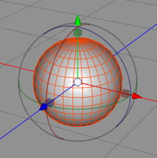
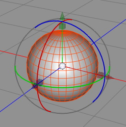
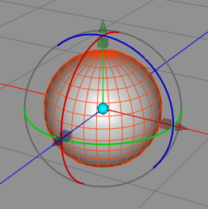

Transform Tool
The Transform Tool is the work horse of any 3D modeler and is probably the most often used tool of all. It contains three tools in one. You can use it to move, scale and rotate around points, edges, polygons, objects and even tags.
Transformations:
The transform tool only acts on selections so you first have to select the objects, points etc. before you can move them around. To change between the different transformation types you have to click on the appropriate gadgets. To use the move transformation, click on the cone. For rotational transformations, click on the rings, and for scale transformation, click on the box. You can see which transformation type is currently active, since the appropriate symbol (cone, ring or box) will be highlighted. See the pictures below for a visual demonstration.
|  |  |  | ||||
|
Move mode
|
Rotate mode
|
Scale mode
|
Gadget mode
|
The move and scale gadgets can be also use to perform a move/scale which is constrained in the direction of the chosen axis. For example if you drag the Y-cone. Now the X and Z coords are locked and the object just moves into the Y direction. But if you drag the Y-cone while holding the SHIFT key the Y-axis will be locked and and you can move the object in the X-Z plane.
To perform a free unconstraint move you can either use click and drag the center of the transform gadget or you can hold down the SHIFT+ALT keys during dragging.
Selection:
The Transform tool not just allows to transform objects or its components. It also allows you to select them. When you don't hit the transform gadget with your mouse click the transform tool works like paint selection and you can select polygons, edges or in whatever selection mode you are.
When you want to tweak just single points or polygons it is more efficient to use the tweak mode. The tweak mode can only transform components like polygons or edges but no complete objects. To access the tweak mode unselect all polygons, edges or points. Now hold the SHIFT+ALT key pressed while moving the mouse over the mesh or spline. The tweak able components will no highlight. If you now click and drag the highlighted component it is not necessary to first select the components. You directly can manipulate them. You can therefore perform small manipulations on the mesh very fast.
Gadget mode:
The transform gadget it usually positioned in the center of the current selection. But sometimes it is more convenient when the gadget is position somewhere else. For example at the button of an object or at an edge of a polygon. To position the gadget wherever you want you can use the gadget mode. The gadget mode is accessed by double clicking on the center sphere of the transform gadget. When in gadget mode the center turn into cyan. Now you can move and rotate the transform gadget arbitrarily without transforming the selection. You can even use the auto-highlighting feature for snapping the transform gadget to a certain edge or point. Once you have positioned the transform gadget double click on the center again to leave the gadget mode.
To return to the normal automatic positioning of the gadget you either have to click into the empty space (not hit the transform gadget) or press the ESC key.
Snapping mode:
When snapping is turned on the center of the transform gadget will snap to the chosen snapping components (points, edges, etc.) while you move the gadget over them. When you perform a constraint move (like using the Y handle) the object will only snap into the constraint component. In that case the mouse pointer and not the gadget center is used to determine the snapping component.
Keys
- Shift + click: Extend the current point, edge or polygon selection without clearing the current selection.
- Command + click: Unselect a selected point, edge or polygon.
- Shift + Alt + drag: Free move or uniform scale.
- Command + drag: Works only with spline objects. Use this to open up a closed spline or to break tangents.
Properties
- Orientation: With this property you can choose if you want to perform the move/scale/rotate in the local coordinate system of the object or in the global coordinate system of the whole scene.
- Auto mode: When editing polygon objects you can directly edit points, edges and polygons without choosing the appropriate edit mode before.
- Position: The position of the transform gadgets center. You can edit these values to numerically position a selection.
- Snapping: Turn on and off snapping.
- None: Snapping is turned off.
- Component: Component snapping to points, edges or polygons is turned on.
- Surface: Surface snapping is turned on. When surface snapping is on the transform gadget snap to the surface of polygon objects.
- Raster: When raster snapping is turned on the gadget snaps to a global raster.
- Points: If this property is checked, snapping to points of polygon objects or splines is enabled.
- Edges: If this property is checked, snapping to the center of edges is enabled.
- Polygons: If this property is checked, snapping to the center of polygons is enabled.
- Object center: If this property is checked, snapping to object centers is enabled.
- Raster width: When raster snapping is turned on you can set the raster width with that property.